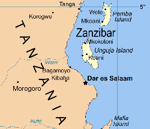

What My Nanima Can Teach Us About Integration
Introduction
Not to be rude, but grandparents are weird. They endured a much lower and arguably tougher quality of life. Yet they bought their house for like only $50. Despite their uncanniness, I believe grandparents are just as important as their grandchildren. While the younger generations determine the future, seniors like my Nanima (Grandma) determine what knowledge is passed on to the future. She was born a second-generation immigrant in present-day Tanzania and later became a first-generation Canadian. Her life story and knowledge can teach us a valuable lesson on the concept of integration, and how we might all be misunderstanding it in a globalized 21st century.
My Nah-Knee-Ma and Me (September 2022)
She doesn't know how to make a funny face ü§¶üèæ‚Äç‚ôÇÔ∏è
Background & History
For centuries, my family has migrated around the world and integrated into various cultures to form new and complex ones. My great-great-grandfather was born in the Kutch region of India during the 1850s. 20 years later, he migrated to a small island in present-day Tanzania called Zanzibar. He returned to India in the 1880s to have his son, my great-grandfather, and shortly after, with the whole family, they permanently settled in Zanzibar. Many Ismaili Muslims like my great-grandfather fled Kutch to escape widespread famine caused by droughts in the region.
By the time my Nanima (his daughter) was born in 1932, my family had become fluent in over 4 languages! At home, they spoke their native language from Kutch, India, called Kachhi. At work, they spoke the local language Swahili, especially with the Indigenous pollution. At our mosque, they spoke Gujarati as most of the members descended from the southeastern part of Gujarat in India. By this time, mainland Tanzania had been colonized by Britain. People from Zanzibar often visited the mainland to trade or see family, hence my family had learned the language of business there, English. Finally, since Zanzibar was controlled by Oman at that time, they learned spoken and written Arabic.
After Tanzania and Zanzibar gained independence, they joined together to form a republic. The new Tanzanian government sought to reduce the place and influence of its racial minorities (i.e. mainly the people of Indian descent) in society. New policies were enacted to take away their property and wealth. After similar policies were enacted in neighbouring Kenya, and Uganda's dictator Idi Amin threatened to put its Indians in concentration camps if they do not leave the country, my Nanima applied for Canadian citizenship for safety and for a better quality of life for her family. In 1973, my Nanima and our family migrated from Dar es Salaam, Tanzania to Toronto, Canada. Since then, they have created a new life that combines the cultures of Kutch, Zanzibar, and Canada.
Below is a timeline of my Nanima's life that shows the combination of all these cultures:
Map of the Kutch District in Gujarat, India

Map of the island of Zanzibar in present-day Tanzania
